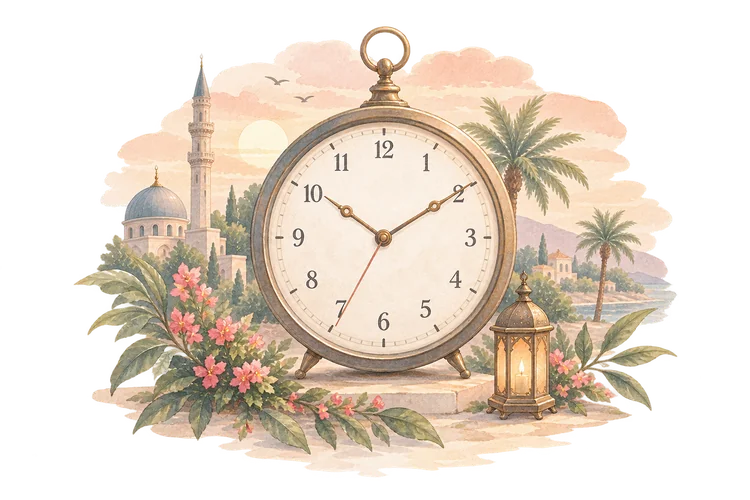

Next Prayer
—
—
Find mosques, check prayer times, read the Qur'an, remember Allah and grow every day.
May this blessed day bring you closer to Allah and fill your heart with peace <3
Wishing you a blessed month of fasting, prayer and reflection <3
Locate nearby mosques and find the next available Jama'ah.
Accurate times, Jama'ah info and smart reminders for your day.

Read, listen and reflect with translations and recitations.
Track your prayers, good deeds and daily reflections.
Timeless supplications and adhkar for every moment.
Step-by-step guides for daily acts of worship made simple.
Small steps, consistent actions, lasting change.
WhereWePraying? is a free Islamic companion built to bring the everyday tools of worship into one calm, uncluttered place. Instead of switching between a mosque finder, a prayer times app, a Qur'an reader and a separate du'a collection, everything a practising Muslim needs each day lives here — together.
Find a mosque near you and see real Jama'ah (congregational prayer) times set by each mosque's own committee, not just an estimate. Check accurate, location-based prayer times for Fajr, Dhuhr, Asr, Maghrib and Isha with a live countdown to the next prayer. Read the Qur'an online with Arabic text, translation, transliteration and audio recitation. Keep an Islamic journal to track your daily prayers and good deeds, and turn to a growing library of du'a, dhikr and step-by-step worship guides whenever you need them.